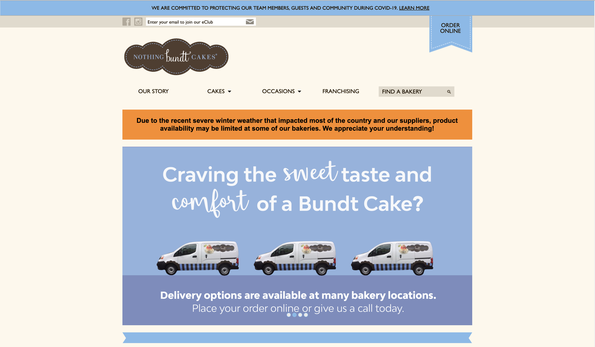
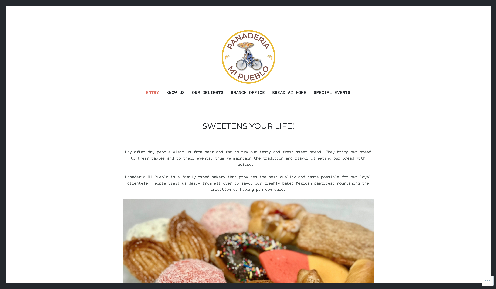

The Bakeshop

The Bakeshops's website is a great example of balance. They filled their negative space with a large vibrant photo that gives an insight as to what they're all about. Their navigation bar at the top is also light and simple, a good compliment to their big bold logo. The flow of the page is very appealing as the images stay in place and only the background moves.
Breeze Bakery Cafe

Breeze Cafe's website has a consistent theme and style. Their website is full of warm and neutral colors and has a good visual hierarchy with a thick navigation bar and a large photo underneath. It is very easy to navigate through their website and they have announcements at the top of the page so you won’t miss them.
Great Harvest Bread Co.

Great Harvest has a consistent color scheme throughout their site to match their farm style brand. Their navigation bar has all the useful information you could need, and a decorated button for ordering catering, which could indicate they’re trying to highlight that option from the rest. The site appears to adhere to a three column grid layout and has a good visual hierarchy.
Nothing Bundt Cakes
Nothing Bundt Cakes has a consistent design and color scheme throughout their website. They adhere to soft colors and patterned borders. Their page is easy to navigate through and even highlights their online ordering button with a banner at the top of their page to make it easy for the user to find. They use the middle of the page to highlight specials and their navigation bar is repeated at the bottom of the page to make it easy to access. My only complaint is that I wish the sides of the page weren’t so large or empty.
Panaderia Mi Pueblo
Panaderia Mi Pueblo has a simple black and white theme throughout their page that I feel creates a great balance with the vibrant pictures they use of their products and their logo. Their navigation bar is easy to follow, but they use “entry” instead of “home” which is uncommon and could be confusing. I only wish the middle of the page were wider so the side margins wouldn’t be so empty.